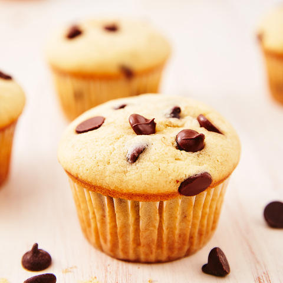

Chocolate Chip Muffins
Chocolate Chip Muffins

They say there is nothing better than a warm chocolate chip cookie fresh out of the oven.
Enter the chocolate chip muffin. Freshly baked, these muffins are perfection. A perfect
crispy top that will pop right off (the proper way to eat a muffin) and a fluffy middle that
makes them stand tall. These are the muffins we want to wake up to every single morning.
INGREDIENTS:
- 2 c. all-purpose flour
- 1 tsp. kosher salt
- 1 tsp. baking powder
- 1/2 tsp. baking soda
- 1/2 c. (1 stick) butter, softened
- 1/2 c. granulated sugar
- 1/4 c. packed brown sugar
- 1 large egg
- 1 tsp. pure vanilla extract
- 1 c. milk
- 1 c. chocolate chips
DIRECTIONS:
Preheat oven to 350° and line two muffin tins with liners. In a large bowl, whisk together flour, salt, baking powder, and baking soda.
In another large bowl, using a hand mixer, beat butter and sugars together until light and fluffy.
Add egg and beat until combined, then add vanilla. Add half of dry ingredients to wet ingredients and mix until just combined,
then add milk and mix until combined. Add in remaining dry ingredients and mix until combined, then fold in chocolate chips
Divide batter evenly between muffin liners and bake until a toothpick inserted in the middle comes out clean, 20 to 23 minutes.